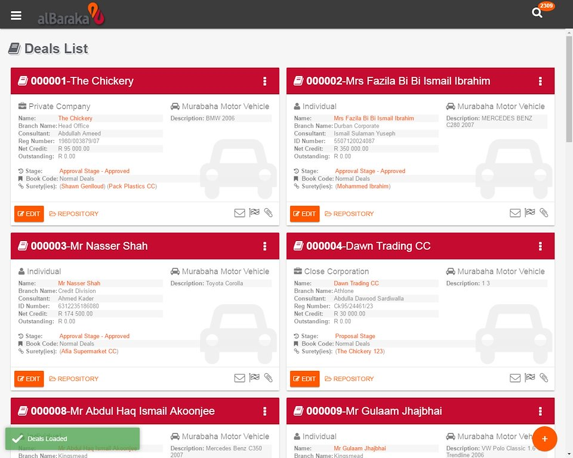
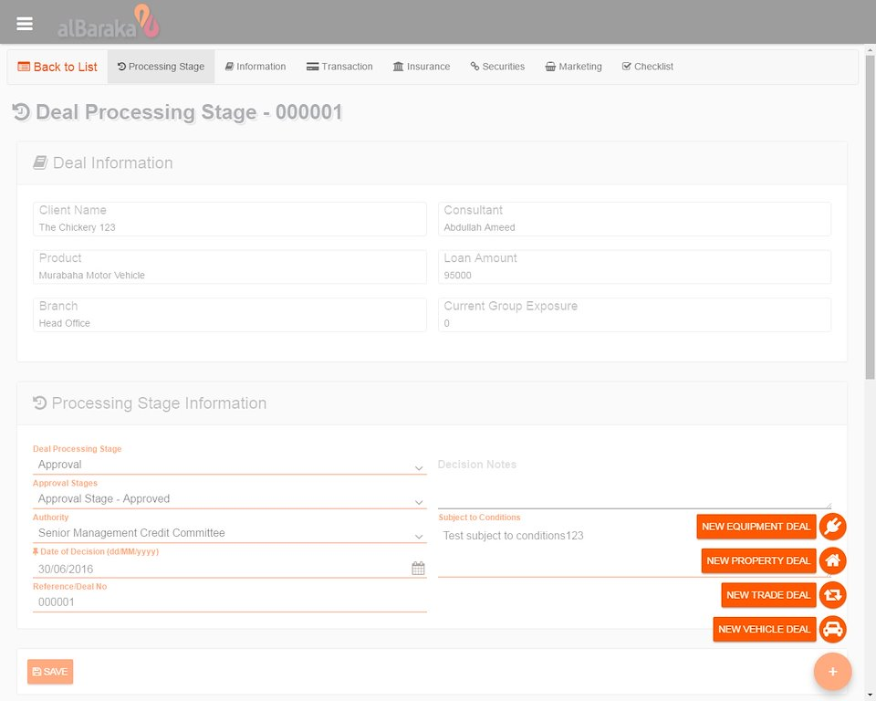
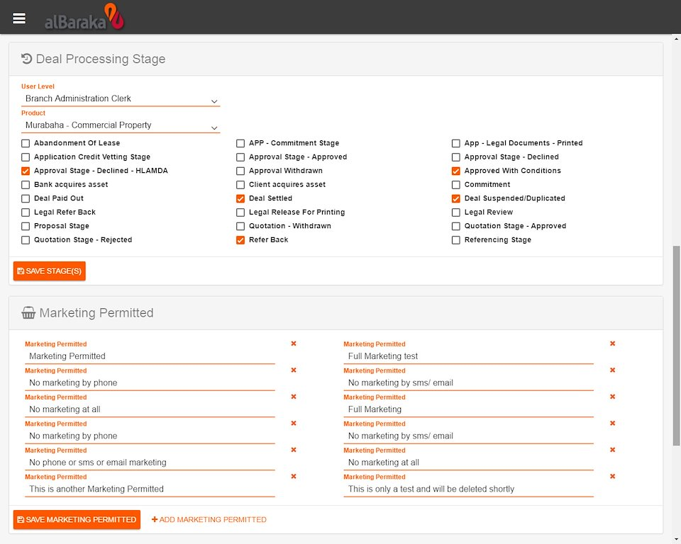
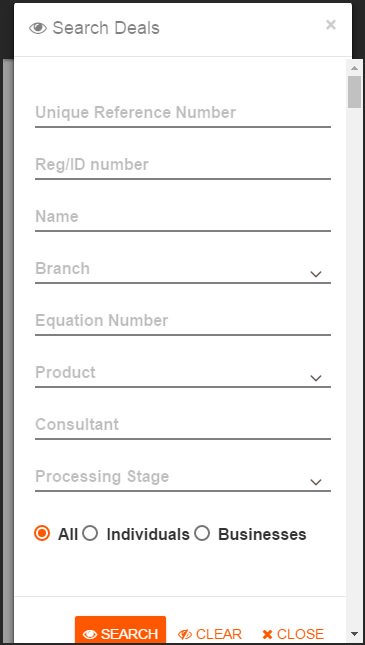

- 
- 
-

-

-

- 
-

- 
-

Due to signed non-disclosure agreements, no intellectual property has been defined here.
The following screenshots were of a homemade redesign and rewrite, with fake/redacted data, created on my own accord.
I was brought in on an consulting capacity, where I was made lead of a 4 person team. My privary focus was to engage with the client, maintain technical trust, while upgrading the outdated system.
During my time there, I patched SQL injection holes, added true Authentication & Authorisation backend and upgraded & refactored from WebForms to .NET MVC.
I came up with the concept of pushing for paperless documentation, to save the business money. Along with programming custom VBScript templates, for the client to create their entire workflow directly within MS Word and Excel respectively.
The CAPS system was created to take the entire credit approval, requisition, mandates, application, documentation and audits process to a semi-automated level.
These deals are managed by the legal, audit and credit departments respectively. Deals are then handled through the system by its corresponding processing stages and applicant types. Each deal, dependent upon types, owners, and pricings, creates their own dynamic reporting and documentation. Sticking to a base of logarithmic sub-systems that generate specialised and detailed accounting analysis data.
The CAPS system was built around a custom made CMS, that configured editable pages and user roles, that could customise specific clients, product and their credit order.
Majority of the CAPS outputs, feed a document rendering engine, with mild versioning and management reports. This was initially done in raw HTML, until I partitioned this into .NET MVC views and partials.